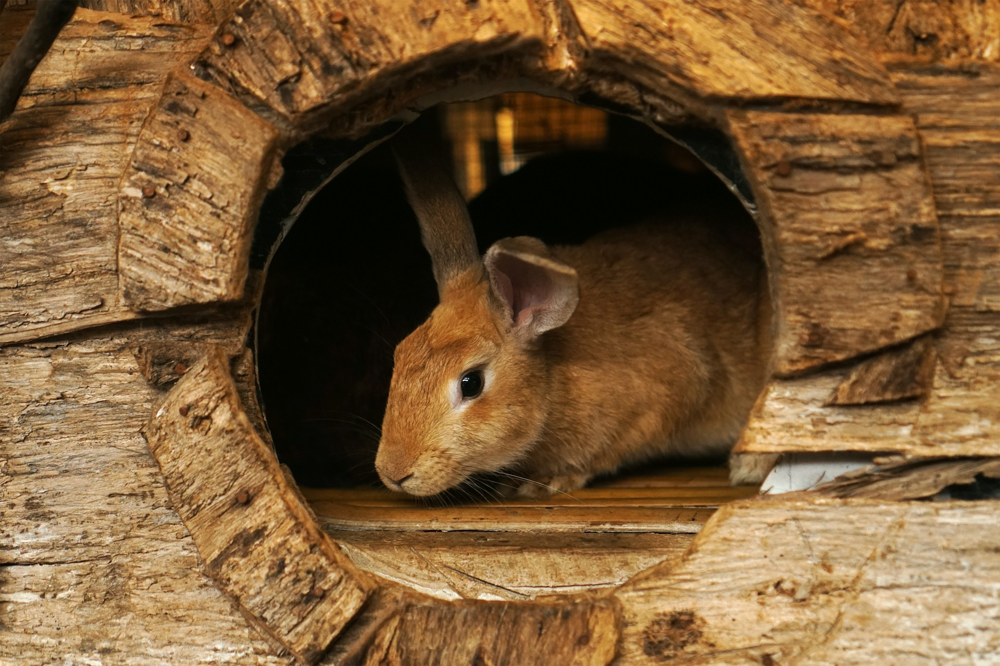
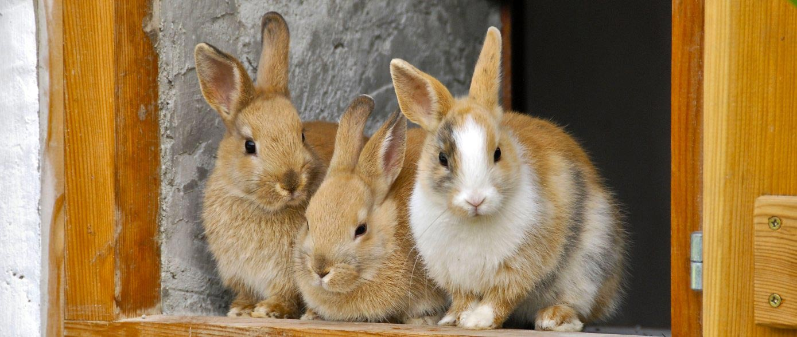

Essential Elements of Rabbit Housing

Cage Size
The minimum recommended size for an adult rabbit's cage is 60x60x60 cm. Larger is always better!

Bedding
Use untreated wood shavings or straw as bedding. Change it regularly to maintain hygiene.

Location
Place cages in a quiet area, protected from predators and extreme weather conditions.

Hygiene
Clean cages at least once a week. Remove waste daily and use safe disinfectants to prevent diseases.